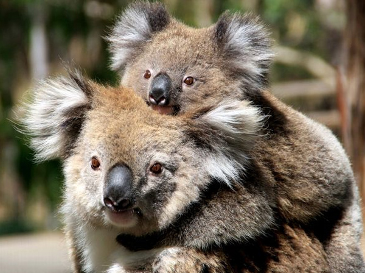

Gấu lười
Koala, hay gấu túi (danh pháp khoa học: Phascolarctos cinereus) là một loài thú có túi ăn thực vật sống tại Úc và là loài vật duy nhất hiện còn sống trong họ Phascolarctidae, và họ hàng gần gũi nhất còn sinh tồn của nó là wombat.[1] Koala được tìm thấy ở vùng dọc theo bờ biển phía đông và nam đảo chính, chính xác là ở Queensland, New South Wales, Victoria và Nam Úc. Nó có chiều dài cơ thể khoảng 60–85 cm (24–33 in) và khối lượng 4–15 kg (9–33 lb). Màu lông từ xám bạc đến nâu sô-cô-la. Koala ở các quần thể phía bắc nói chung nhỏ hơn và sáng màu hơn hơn các cá thể sống ở phía nam. Có thể các quần thể này thuộc các phân loài riêng biệt, nhưng điều này không được công nhận.

Tập tính
Koala được đặt tên chi là Phascolarctos năm 1816 bởi nhà động vật học người Pháp Henri Marie Ducrotay de Blainville,[5] ông đã không đặt tên loài cho nó mãi đến khi được xem xét lại. Năm 1819, nhà động vật học người Đức Georg August Goldfuss đặt danh pháp hai phần cho nó là Lipurus cinereus. Vì tên Phascolarctos được công bố trước, chiếu theo Hệ thống mã danh pháp quốc tế cho động vật (ICZN), nó có quyền ưu tiên là tên chính thức.[6] Nhà tự nhiên học người Pháp Anselme Gaëtan Desmarest đề xuất tên Phascolartos fuscus năm 1820, cho rằng các cá thể màu nâu khác loài với các cá thể màu xám. Các tên khác được đề xuất bởi các tác giả châu Âu gồm Marodactylus cinereus bởi Goldfuss năm 1820, P. flindersii bởi René Primevère Lesson năm 1827, và P. koala bởi John Edward Gray năm 1827.